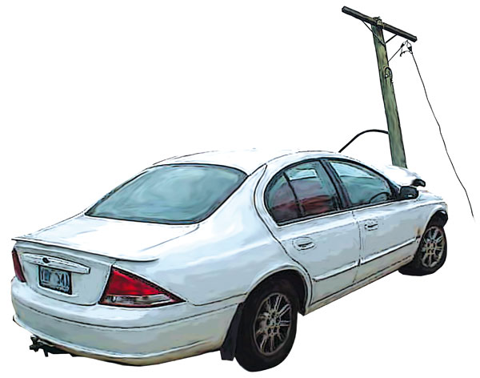
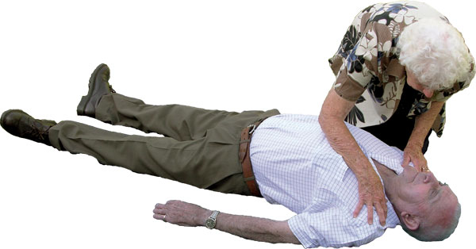
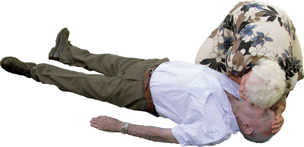
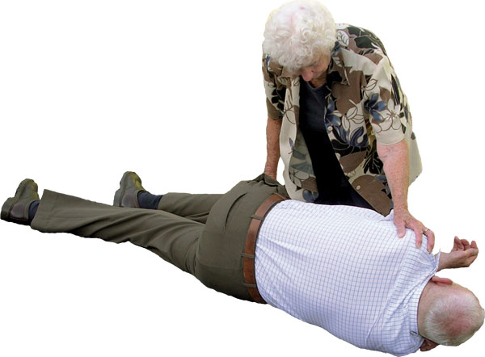
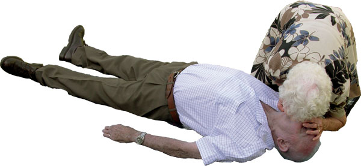
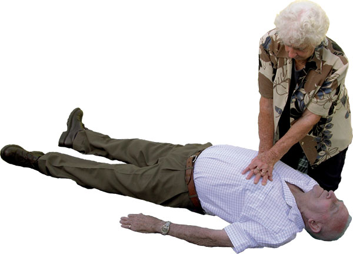

Emergency Action Plan
Emergency Action Plan
The emergency action plan consists of seven steps:
Danger (Safety)
Response
Send for help
Airway
Breathing
Compressions
Defibrillation
These steps are known as DRSABCD and are the major consideration for everyone involved in the care and treatment of casualties.
Danger (Hazards, risks, safety)
Once an emergency has occurred you need to ensure the safety of all those at the scene by checking for hazards. Check for any risk to:
 Yourself
Yourself
 Bystanders
Bystanders
 Casualties
Casualties
Take the time to conduct a primary survey of the scene to look for anything that may threaten the safety of those on or around the scene.
Hazards that may be present include:
 bio-hazards
bio-hazards
 bombs
bombs
 bullets
bullets
 chemicals
chemicals
 electricity
electricity
 fire
fire
 fumes
fumes
 gases
gases
 smoke
smoke
 fallen power lines
fallen power lines
 falling masonry
falling masonry
 fast flowing water
fast flowing water
 flammable material
flammable material
 on-coming traffic
on-coming traffic
 risk of explosion
risk of explosion
 sharp metal edges
sharp metal edges
 slippery surfaces
slippery surfaces
 unstable structures
unstable structures
Leave dangerous situations to the emergency personnel who have the training and equipment to manage the situation. Risking your own safety in a dangerous situation may increase the number of casualties to manage.
Other situations may permit the removal of the hazard, or the removal of the casualty from the hazard. Examples of removing a hazard would be cleaning away broken glass at a motor vehicle accident scene, or turning electricity off at the main powerboard in an electrocution incident.
As a general rule you should avoid moving casualties unless there is a hazard that you cannot remove, such as fire or poisonous fumes. Moving a casualty, especially an unconscious casualty, is very difficult and should be left to ambulance personnel who have the training and equipment necessary to protect themselves and the casualty.
If it is essential to move a casualty before an ambulance arrives, take extreme care and use good manual handling practice.
Provided they are not at further risk, you should check casualties in the position in which you find them.
In the event that you are unable to check a casualty in the position that they are in, gently roll them onto their back, supporting the head and neck during movement.
Response
Check the casualty for a response by touching the casualty's shoulders and asking loudly 'are you all right'?
DO NOT shake children and infants, and there is no need to aggressively shake a casualty to gain a response, just touching the casualty on the shoulders and talking loudly is an effective method and will awaken a sleeping person.
A casualty that is unresponsive should be considered unconscious.
If the Casualty Responds
If the casualty responds by answering and appears conscious, leave them in the position in which you find them (provided there is no further danger or risk).
 check the casualty's condition and try to find our what is wrong
check the casualty's condition and try to find our what is wrong
 get help if required
get help if required
 observe and reassess the casualty regularly
observe and reassess the casualty regularly
If the Casualty Does Not Respond
 send for help
send for help
Send for help
Sending for help as early as possible is important.
 shout for help to alert nearby people
shout for help to alert nearby people
 send someone for help
send someone for help
 ask them to find and bring an AED if available
ask them to find and bring an AED if available
 if you are on your own, use your mobile phone to alert the ambulance service using Triple Zero (000)
if you are on your own, use your mobile phone to alert the ambulance service using Triple Zero (000)
 leave the casualty only when there is no other option available
leave the casualty only when there is no other option available
 Airway
Airway
Ensuring an open airway is essential.
Open Airway
 turn the casualty onto their back
turn the casualty onto their back
 place your hand on the forehead
place your hand on the forehead
 place your fingertips under the point of the casualty's chin
place your fingertips under the point of the casualty's chin
 gently tilt the head back and lift the chin to open the airway
gently tilt the head back and lift the chin to open the airway
 remove any clearly visible foreign bodies
remove any clearly visible foreign bodies
Breathing
Keep the airway open and check for normal breathing.
 look, listen and feel for no more than 10 seconds for normal breathing
look, listen and feel for no more than 10 seconds for normal breathing
 look to see if the chest rises
look to see if the chest rises
 listen for the sound of normal breathing
listen for the sound of normal breathing
 feel for air against your cheek
feel for air against your cheek
In the first few minutes after a cardiac arrest, the casualty may be taking infrequent, slow and noisy gasps as well as sounds of gurgling, sighing or coughing.
This type of breathing is ineffective, as it does not move air into or out of the lungs and the casualty should be treated as if they are not breathing.

If you are in any doubt that the casualty is breathing normally, treat as if they are not breathing.
If Breathing Present
 roll into recovery position
roll into recovery position
 check the casualty's condition and get help if needed
check the casualty's condition and get help if needed
 observe and reassess the casualty for continued breathing normally
observe and reassess the casualty for continued breathing normally
If Breathing is NOT Normal or is Absent
 send someone for help and to find and bring an AED if available
send someone for help and to find and bring an AED if available
 start chest compression rather than initial rescue breaths
start chest compression rather than initial rescue breaths
Compressions
 kneel by the side of the casualty
kneel by the side of the casualty
 place your hands, or two fingers with an infant, in the centre of the casualty's chest interlocking your fingers
place your hands, or two fingers with an infant, in the centre of the casualty's chest interlocking your fingers
 press straight down on the sternum 100 times per minute (a little less than 2 compressions a second)
press straight down on the sternum 100 times per minute (a little less than 2 compressions a second)
 give 30 compressions
give 30 compressions
 compress 1/3 chest depth
compress 1/3 chest depth
 give 2 rescue breaths
give 2 rescue breaths
 open the airway with head tilt and chin lift
open the airway with head tilt and chin lift
 pinch the casualty's nose closed
pinch the casualty's nose closed
 allow the mouth to open, while maintaining chin lift
allow the mouth to open, while maintaining chin lift
 take a normal breath and place your lips around the mouth, making sure that you have a good seal
take a normal breath and place your lips around the mouth, making sure that you have a good seal
 blow into the casualty's mouth for about 1 second
blow into the casualty's mouth for about 1 second
 watch for chest rise
watch for chest rise
 maintaining head tilt and chin lift, take your mouth away from the casualty and watch for the fall of the chest
maintaining head tilt and chin lift, take your mouth away from the casualty and watch for the fall of the chest
 give second breath
give second breath
 return your hands or fingers quickly to the centre of the casualty's chest and then give the next compressions and breaths
return your hands or fingers quickly to the centre of the casualty's chest and then give the next compressions and breaths
 continue 30 compressions and 2 rescue breaths cycles
continue 30 compressions and 2 rescue breaths cycles
 apply Automated External Defibrillator (AED) if available
apply Automated External Defibrillator (AED) if available
 follow the voice/visual prompts of the AED
follow the voice/visual prompts of the AED
 DO NOT apply any pressure over the casualty's ribs, upper abdomen or the bottom end of the bony sternum (breastbone)
DO NOT apply any pressure over the casualty's ribs, upper abdomen or the bottom end of the bony sternum (breastbone)
Defibrillation
Automated external defibrillators (AEDs) are safe and effective to use. Use of an AED by a layperson makes it possible to defibrillate many minutes before professional help arrives.
 ensure safety
ensure safety
 send someone for the AED if not already done
send someone for the AED if not already done
 turn on the AED as soon as it arrives
turn on the AED as soon as it arrives
 attach the electrode pads to the casualty's bare chest
attach the electrode pads to the casualty's bare chest
 follow the spoken/visual prompts of the AED immediately
follow the spoken/visual prompts of the AED immediately
 ensure that nobody touches the casualty while the AED is analysing the rhythm
ensure that nobody touches the casualty while the AED is analysing the rhythm
 If a shock is indicated:
If a shock is indicated:
 ensure that nobody touches the casualty
ensure that nobody touches the casualty
 push the shock button as directed
push the shock button as directed
 fully-automatic AEDs will deliver the shock automatically
fully-automatic AEDs will deliver the shock automatically
 immediately resume CPR, using a ratio of 30 compressions to 2 rescue breaths
immediately resume CPR, using a ratio of 30 compressions to 2 rescue breaths
 continue to follow the voice/visual prompts of the AED
continue to follow the voice/visual prompts of the AED
If no shock is indicated:
 immediately resume CPR using a ratio of 30 compressions to 2 rescue breaths
immediately resume CPR using a ratio of 30 compressions to 2 rescue breaths
 continue to follow the voice/visual prompts of the AED
continue to follow the voice/visual prompts of the AED
Unsuccessful rescue breaths
If rescue breaths do not make the chest rise with each attempt, proceed to compressions and give 30 compressions and then before your next attempt at rescue breaths:
 check the casualty's mouth and remove any visible obstructions
check the casualty's mouth and remove any visible obstructions
 ensure that there is adequate head tilt and chin lift
ensure that there is adequate head tilt and chin lift
 DO NOT attempt more than two rescue breaths each time before returning to chest compressions
DO NOT attempt more than two rescue breaths each time before returning to chest compressions
Chest compression only CPR
If for any reason rescue breaths can not be given, chest compressions should still be administered as some oxygen will still be circulated. Compress in the centre of the casualty's chest continuously 100 times per minute.
Checking for signs of life
Do not stop to re-check the casualty for signs of life unless they start breathing normally again.
It is important to minimise interruptions to chest compressions.
Multiple rescuers
 ensure that an ambulance has been called
ensure that an ambulance has been called
 ensure that someone has been sent to get equipment, such as an AED
ensure that someone has been sent to get equipment, such as an AED
 if there is more than one rescuer present, change over the roll of performing CPR approximately every 2 minutes to reduce fatigue
if there is more than one rescuer present, change over the roll of performing CPR approximately every 2 minutes to reduce fatigue
 change over with minimal delay between compressions
change over with minimal delay between compressions
Duration of CPR
CPR should continue until:
 The casualty starts to wake up, move, open eyes or to breathe normally
The casualty starts to wake up, move, open eyes or to breathe normally
 The scene becomes unsafe
The scene becomes unsafe
 Qualified help arrives and takes over
Qualified help arrives and takes over
 Signs of life return
Signs of life return
 It is impossible to continue (eg. exhaustion, scene becomes unsafe)
It is impossible to continue (eg. exhaustion, scene becomes unsafe)
 An authorised person pronounces life extinct
An authorised person pronounces life extinct
When to get help
 If more than one rescuer is available, one should start resuscitation while another rescuer goes for assistance
If more than one rescuer is available, one should start resuscitation while another rescuer goes for assistance
 In children or infants if only one rescuer is available, then perform 1 minute of CPR before leaving to go for assistance
In children or infants if only one rescuer is available, then perform 1 minute of CPR before leaving to go for assistance
 If the casualty is an infant or small child it may be possible to take them with you
If the casualty is an infant or small child it may be possible to take them with you
 If the collapse was sudden, not caused by trauma or poisoning and the casualty is a child with a history of heart disease, go for help immediately
If the collapse was sudden, not caused by trauma or poisoning and the casualty is a child with a history of heart disease, go for help immediately
 Remember: Any resuscitation is better than no resuscitation at all!
Remember: Any resuscitation is better than no resuscitation at all!
Useful Resource
Australian Resuscitation Council
http://www.resus.org.au